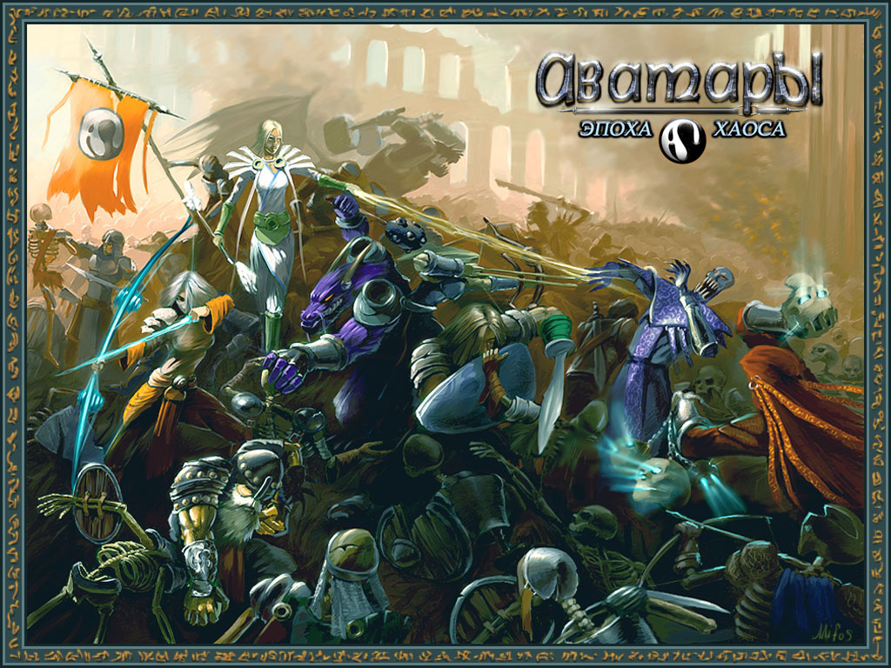

Что это такое?
ChaosageDaily – это блог-агрегатор Аватарских статей на любые, интересующие игроков, темы: билды персонажей, прохождения квестов, анализ и наблюдения, обсуждение игровых обновлений и новостей и т.д.
На момент создания этого сайта игровые статьи от игроков были размещены на различных клан-сайтовых ресурсах, что могло усложнить поиск нужного материала. Задача chaosageDaily постепенно собрать воедино данные материалы, категорировать их и предоставить открытый доступ для комьюнити игры.
Как писать свои статьи?
Для написания собственных статей необходимо:
- Зарегистрироваться в системе Аватариум посредством команды
!getв общем чате проекта - Игровой чат-бот пришлет в приват персонажу hash, который является паролем для входа на ChaosageDaily. Логин – Ник персонажа
- После входа на сайт появится возможность комментировать статьи и участвовать в оценке качества статей (лайк/дизлайк)
- Чтобы получить роль Автора и писать собственные статьи необходимо написать своё желание персонажу Материя или другому представителю клана Уничтожители.
- В случае, если кандидатура Автора будет одобрена другими Авторами, вы получите функционал добавления и редактирования собственных статей.
Какие правила написания статей?
При написании статей необходимо учитывать следующие правила:
- При написании статей по игровым механикам (как плавить древние вещи), обзорные статьи квестов (прохождение) и другим статьям, которые можно отнести к категории “Официальные”:
- Не материться
- Четко формулировать мысли и описания
- Избегать субъективных оценок (“самый легкий этап квеста”)
- Если вы используете данные из других источников (например, переписываете статью с клан-сайта или с форума), обязательно укажите ссылку на источник. Или ник соавтора
- При написании всех остальных статей (включая “Официальные”):
- Добавлять изображение для статьи (которое будет отображаться на главной странице поста). Кнопка – “Изображение записи”
- Указывать теги и рубрики статьи (например, рубрика “Билды”, метка “Ловкач”)
- По возможности уважительно отнестись к потенциальным читающим – меньше орфографических ошибок, мата и прочей нелицеприятной лексики (если только данная лексика необходима в рамках данной рубрики и служит для усиления качества статьи)
- Для улучшения качества статей рекомендуется использовать функционал верстки ChaosageDaily – таблицы, заголовки, списки, видео и т.д. То есть не писать сплошным текстом – это не форум.
Будем рады увидеть вас в рядах соавторов ChaosageDaily!